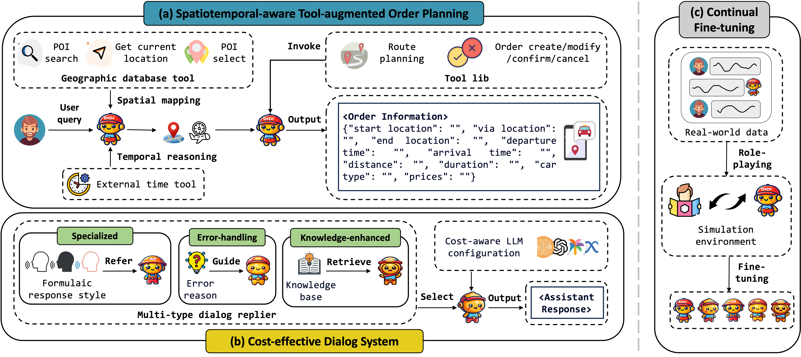
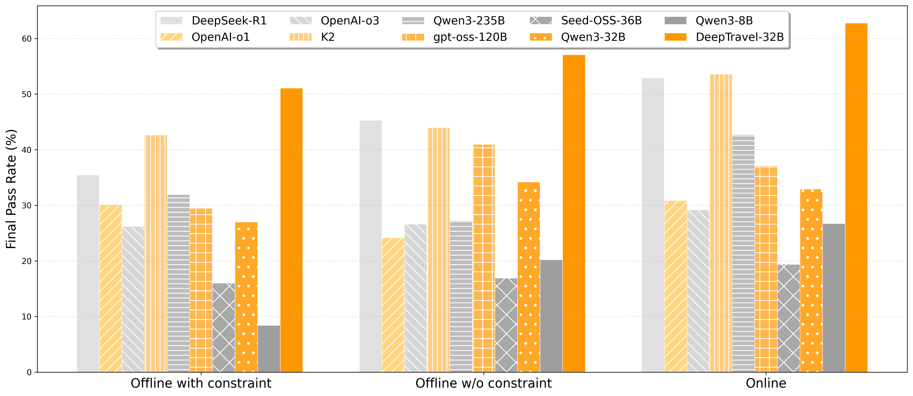
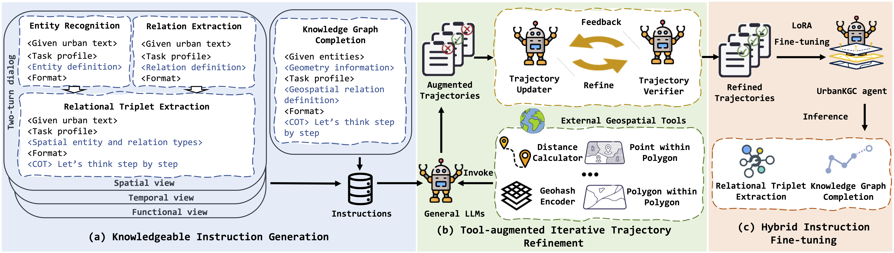
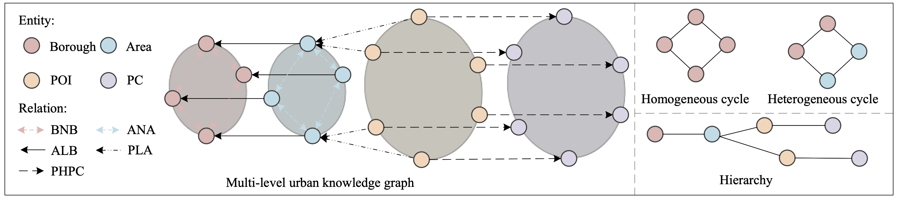

Yansong Ning
Yansong is a first-year Ph.D. student in Artificial Intelligence Thrust at The Hong Kong University of Science and Technology, Guangzhou Campus. He continued his postgraduate studies after completing an M.Phil. degree at HKUST(GZ) under the supervision of Prof. Hao Liu and Prof. Hui Xiong. Currently, he is a research intern (Qingyun Project) in the AI Lab of Tencent. Prior to that, he obtained his Bachelor's degree in the School of Data Science at TYUT. He also interned at L Lab of Didi Chuxing, facilitating the deployment of "AI Xiaodi". During undergraduate studies, he also interned at Guangzhou HKUST FYTRI, collaborating with Alibaba Cloud Intelligence Group.
His recent research focuses on reasoning LLMs and agent. Specifically, his research goal is to understand and improve the "agentic reasoning capability" of LLMs (automatically plan, execute external tools, and reflect on tool responses to explore, verify, and refine intermediate actions in multi-step reasoning process), guaranteeing their practical applicability in real-world deployment, e.g., optimizing agent to satisfy user's objectives via multiturn interaction.
[Mar 2026] I'm honored to join in Tencent AI Lab as a research intern (Qingyun Project), collaborating to solve cutting-edage challenges of Agentic RL and its application in game agent domain.
[Feb 2026] Pleasure to release Agent-Omit, a unified agentic RL framework for buidling efficient LLM agent, capable of adaptively omit thought and observation in multi-turn reasoning process.
[Jan 2026] One paper was accepted to ICLR 2026, about understanding the spatiotemporal reasoning capability in LLMs. Congrates to my co-author!
[Sep 2025] Pleasure to release DeepTravel, an end-to-end agentic reinforcement learning framework for building autonomous travel agent!!
[Jul 2025] Two papers were accepted to ECML-PKDD and ECAI, about Federated Graph Learning and Federated Fine-tuning! Congrates to my co-author!
[May 2025] Thrilled to release Long⊗Short, an efficient reasoning framework that enables two LLMs to collaboratively solve the problem. Feel free to use our released OpenMath-ThoughtChunk1.8K on Hugging Face for thought-level reasoning analysis!!
[May 2025] DiMA is accepted to KDD 2025!!
[April 2025] Pleasure to give a talk about LLM-based UrbanKG Construction in The Geographical Society of China 2025 Academic Annual Meeting at Zhejiang University!!
[Feb 2025] Thrilled to release DiMA, an LLM-powered ride-hailing assistant deployed on DiDi Chuxing. Thanks for the guidance and support from L Lab!!
[Sep 2024] UrbanKGent is accepted to NeurIPS 2024!
[Dec 2023] Pleasure to join DiDi Chuxing as a research intern, collaborating with the L Lab on the LLM pre-training, post-training and LLM-based ride-hailing assistant deployment.
[Sep 2023] UUKG is accepted to NeurIPS 2023!
[Aug 2022] Pleasure to start the summer internship at the Guangzhou HKUST FYTRI, collaborating with Alibaba Cloud Intelligence Group on the projected related to urban knowledge graph.
Featured Research Projects

DiMA: An LLM-Powered Ride-Hailing Assistant at DiDi
KDD 2025
Yansong Ning, Shuowei Cai, Wei Li, Jun Fang, Naiqiang Tan, Hua Chai, Hao Liu
[KDD 2025] Yansong Ning, Shuowei Cai, Wei Li, Jun Fang, Naiqiang Tan, Hua Chai, Hao Liu. DiMA: An LLM-Powered Ride-Hailing Assistant at DiDi. [Paper] [Code] Full Deployment on DiDi Chuxing

DeepTravel: An End-to-End Agentic Reinforcement Learning Framework for Autonomous Travel Planning Agents
Preprint
Yansong Ning, Rui Liu, Jun Wang, Kai Chen, Wei Li, Jun Fang, Kan Zheng, Naiqiang Tan, Hao Liu
[Preprint] Yansong Ning, Rui Liu, Jun Wang, Kai Chen, Wei Li, Jun Fang, Kan Zheng, Naiqiang Tan, Hao Liu. DeepTravel: An End-to-End Agentic Reinforcement Learning Framework for Autonomous Travel Planning Agents. [Paper] Beta Deployment on DiDi Chuxing
[Preprint] Yansong Ning, Jun Fang, Naiqiang Tan, Hao Liu. Agent-Omit: Training Efficient LLM Agents for Adaptive Thought and Observation Omission via Agentic Reinforcement Learning. [Paper][Code]

UrbanKGent: A Unified Large Language Model Agent Framework for Urban Knowledge Graph Construction
NeurIPS 2024
Yansong Ning, Hao Liu
[NeurIPS 2024] Yansong Ning, Hao Liu. UrbanKGent: A Unified Large Language Model Agent Framework for Urban Knowledge Graph Construction. [Paper] [Code] [Slides] [Video]

UUKG: Unified Urban Knowledge Graph Dataset for Urban Spatiotemporal Prediction
NeurIPS 2023
Yansong Ning, Hao Liu, Hao Wang, Zhenyu Zeng, Hui Xiong
[NeurIPS 2023] Yansong Ning, Hao Liu, Hao Wang, Zhenyu Zeng, Hui Xiong. UUKG: Unified Urban Knowledge Graph Dataset for Urban Spatiotemporal Prediction. [Paper] [Code] [Slides] [Video]
[Preprint] Yansong Ning, Wei Li, Jun Fang, Naiqiang Tan, Hao Liu. Not All Thoughts are Generated Equal: Efficient LLM Reasoning via Multi-Turn Reinforcement Learning. [Paper] [Code] [Data]
[ICLR 2026] Siqi Lai, Yansong Ning, Zirui Yuan, Zhixi Chen, Hao Liu. USTBench: Benchmarking and Dissecting Spatiotemporal Reasoning of LLMs as Urban Agents. [Paper] [Code]
Publications And Manuscripts
-
[KDD 2025] Yansong Ning, Shuowei Cai, Wei Li, Jun Fang, Naiqiang Tan, Hua Chai and Hao Liu. DiMA: An LLM-Powered Ride-Hailing Assistant at DiDi. In Proceedings of the 31st SIGKDD Conference on Knowledge Discovery and Data Mining, Toronto, ON, Canada, 2025.
-
[NeurIPS 2024] Yansong Ning, Hao Liu. UrbanKGent: A Unified Large Language Model Agent Framework for Urban Knowledge Graph Construction. In Proceedings of the Thirty-eighth Annual Conference on Neural Information Processing Systems, Vancouver, Canada, 2024.
-
[NeurIPS 2023] Yansong Ning, Hao Liu, Hao Henry Wang, Zhenyu Zeng, Hui Xiong. UUKG: Unified Urban Knowledge Graph Dataset for Urban Spatiotemporal Prediction. In Proceedings of the Thirty-seventh Annual Conference on Neural Information Processing Systems Datasets and Benchmarks Track, New Orleans, USA, 2023.
-
[ICLR 2026] Siqi Lai, Yansong Ning, Zirui Yuan, Zhixi Chen, Hao Liu. USTBench: Benchmarking and Dissecting Spatiotemporal Reasoning of LLMs as Urban Agents. In Proceedings of the Fourteenth International Conference on Learning Representations, Rio de Janeiro, Brazil, 2026.
-
[ECML-PKDD 2025] Fan Liu, Siqi Lai, Yansong Ning and Hao Liu. Bkd-FedGNN: A Benchmark for Classification Backdoor Attacks on Federated Graph Neural Network. In Proceedings of the European Conference on Machine Learning and Principles and Practice of Knowledge Discovery in Databases 2025, Porto, Portugal, 2025.
-
[ECAI 2025] Manning Zhu, Songtao Guo, Pengzhan Zhou, Yansong Ning, Chang Han and Dewen Qiao. FedSODA: Federated Fine-tuning of LLMs via Similarity Group Pruning and Orchestrated Distillation Alignment. In Proceedings of European Conference on Artificial Intelligence 2025, Bologna, Italy, 2025.
-
[arXiv] Yansong Ning, Jun Fang, Naiqiang Tan, Hao Liu. Agent-Omit: Training Efficient LLM Agents for Adaptive Thought and Observation Omission via Agentic Reinforcement Learning. 2026.
-
[arXiv] Yansong Ning, Rui Liu, Jun Wang, Kai Chen, Wei Li, Jun Fang, Kan Zheng, Naiqiang Tan, Hao Liu. DeepTravel: An End-to-End Agentic Reinforcement Learning Framework for Autonomous Travel Planning Agents. 2025.
-
[arXiv] Yansong Ning, Wei Li, Jun Fang, Naiqiang Tan, Hao Liu. Not All Thoughts are Generated Equal: Efficient LLM Reasoning via Multi-Turn Reinforcement Learning. 2025.
-
[arXiv] Jindong Han, Yansong Ning, Zirui Yuan, Hang Ni, Fan Liu, Tengfei Lyu, Hao Liu. Large Language Model Powered Intelligent Urban Agents: Concepts, Capabilities, and Applications. 2025.
Education
-
Sep 2025 - Present, Guangzhou, The Hong Kong University of Science and Technology
Doctor of Philosophy in Artificial Intelligence
Supervisor: Prof. Hao Liu -
Sep 2023 - Jun 2025, Guangzhou, The Hong Kong University of Science and Technology
Master of Philosophy in Artificial Intelligence
Supervisor: Prof. Hao Liu & Prof. Hui Xiong -
Sep 2019 - Jun 2023, Taiyuan, Taiyuan University of Technology
Bachelor of Data Science and Technology of Big Data
Supervisor: Prof. Li Wang
Work Experience
- Mar 2026 - Present, Research Intern (Qingyun Project), AI Lab, Tecent.
- Dec 2023 - Dec 2025, Research Intern, L Lab, DiDi Chuxing Co. Ltd.
-
Jun 2022 - Aug 2023, Research Intern, DLRC, Guangzhou HKUST Fok Ying Tung Research Institute
Teaching/Conference Services
Teaching Assistant: AIAA 3111: Introduction to Data Mining (Spring, 2025)
Session Chair: KDD'2025
Reviewer: NeurIPS'2024'2025, ICLR'2025'2026, ICML'2025'2026, KDD'2026
Awards
- RBM Travel Grant, 2024
- Outstanding Undergraduate Thesis, 2023 (Top 0.2%, 10 out of 7762)
- Finalist Winner of the Mathematical Contest in Modeling (MCM), 2022 (Top 2%)
- Second Prize in the Contemporary Undergraduate Mathematical Contest in Modeling (CUMCM), 2020 (Top 2%)